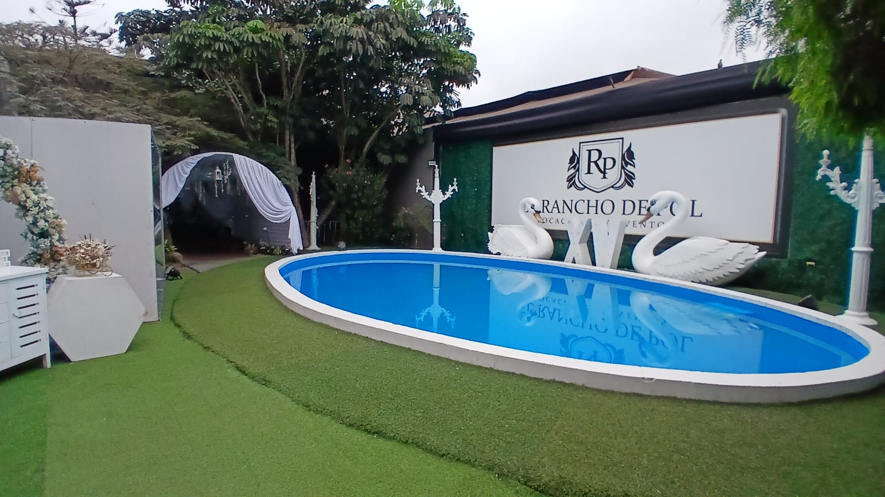
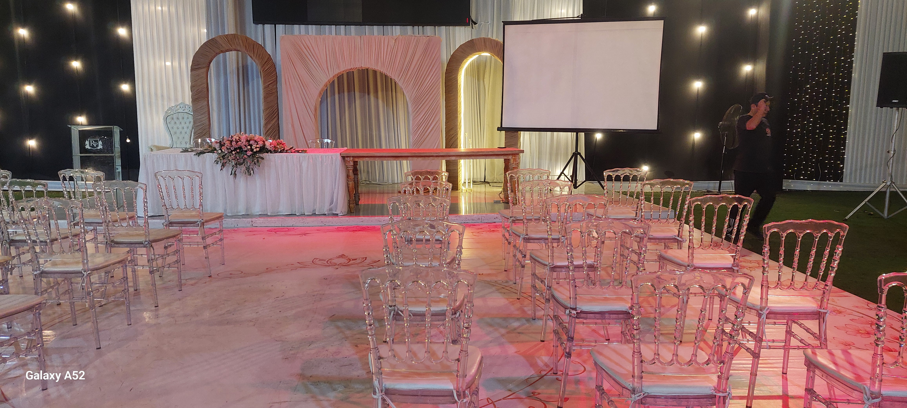
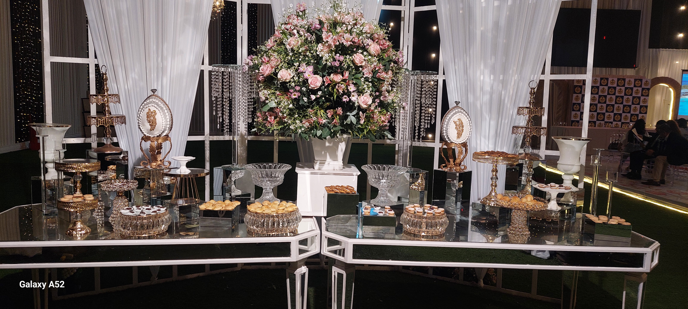
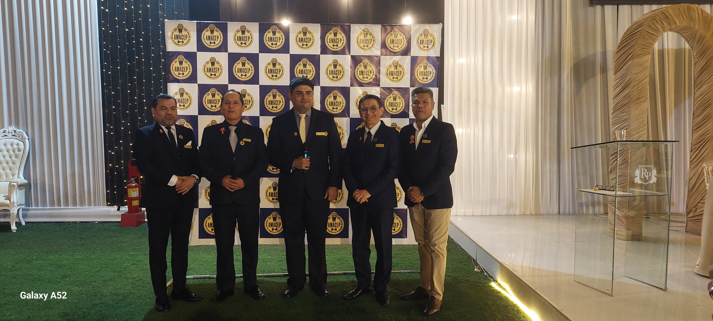
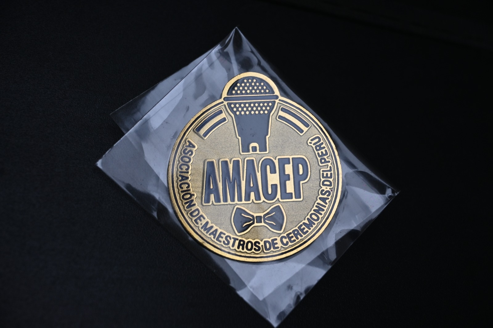
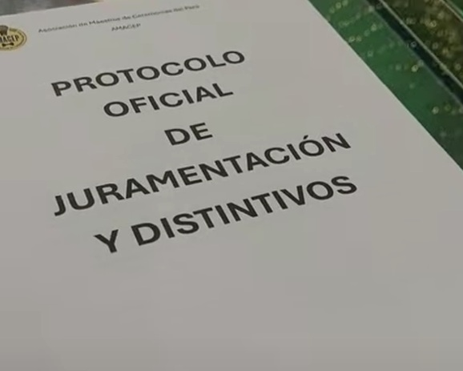

Álbum 01 · Juramentación de Socios Fundadores y Primer Consejo Directivo
Jueves 23 de julio de 2026 · 6:00 p.m. · Salón R1A del Rancho de Pol
Primer acto ceremonial oficial de AMACEP, dedicado a la juramentación de los socios fundadores y del Primer Consejo Directivo (periodo marzo 2025 – marzo 2026).
La ceremonia incluyó la imposición de distintivos a cargo de los familiares y se desarrolló en un ambiente de alta gama, con nutrida concurrencia.

Ambiente exterior· Salón Rancho de Pol
Elegante vista de la piscina exterior destacando el nivel del local elegido para la ceremonia.

Ambiente interior· Escenas de previos al evento
Vista general del salón preparado para la ceremonia, con la disposición protocolar y mesa principal.

Mesa de delicias
Presentación elegante del catering.

Sesión de fotos posterior a la juramentación
Cinco maestros de ceremonias juramentados; el vicepresidente estuvo ausente por encontrarse en provincia.

Distintivo oficial de AMACEP
Distintivo circular metálico oficial de los socios integrantes de la Asociación de Maestros de Ceremonias del Perú (AMACEP).

Protocolo oficial
Programa protocolar a seguir. Cada Maestro de Ceremonias de la Asociación hizo la parte señalada.
Video oficial de la ceremonia
Registro audiovisual completo de la juramentación de socios fundadores y del Primer Consejo Directivo.